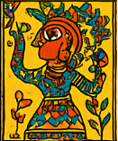

Bhil painting is a vibrant tribal art form from Madhya Pradesh, known for its colorful dots, nature-inspired themes, and deep connection to folklore and traditions.
1. Origins:
- Belongs to the Bhil tribe, one of India’s largest tribal communities.
- Traditionally painted on walls of homes during festivals, rituals, and harvest celebrations.
2. Medieval Period:
- Depicted stories of gods, hunting scenes, animals, and village life.
- Used as visual storytelling for generations with symbolic motifs.
3. Modern Era:
- Now adapted to canvas and paper, gaining recognition in exhibitions across India and abroad.
- Continues to preserve tribal culture while evolving into contemporary art forms.
- Bhuri Bai: First Bhil artist to paint on paper and canvas; Padma Shri awardee.
- Lado Bai: Known for transforming traditional Bhil art into modern expressions.
- Ram Singh Urveti: Renowned for storytelling through Bhil painting.
1. Geometric shapes like triangles and circles dominate the art.
2. Depicts human figures, animals, trees, and daily activities.
3. Painted using natural colors made from clay, rice paste, and plant extracts.
4. Minimalistic style with intricate linework and repetitive patterns.
5. Spiritual themes focusing on rituals, deities, and village life.